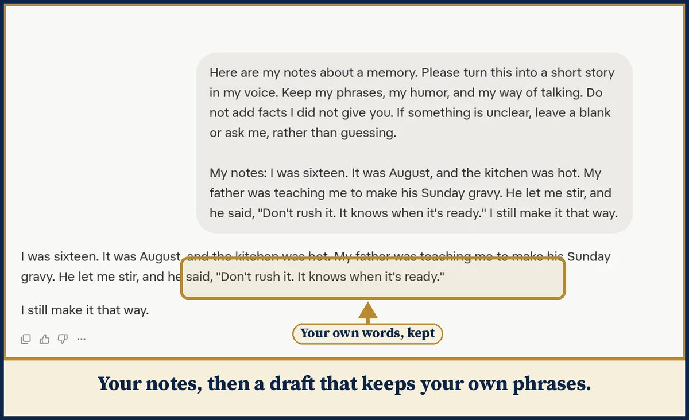

Lesson 5 of 8
Speak a memory, and get it onto the page
In Lesson 4, we made a simple card for what to share and what to keep private. Today we will turn one real memory into a first written draft, in your own words.
You have stories worth keeping. You do not have to be a “writer” to begin.
Three easy ways to catch the memory
Pick the way that feels most comfortable. You do not need any one method.
- Tell it out loud. Use your phone’s voice memo, which is the tool that records your voice, and then jot the key points.
- Type a rough version as it comes to you. Do not polish it yet.
- If your Grok app offers a way to speak, you may use that. If you do not see that option, the first two ways work just as well.
Ten minutes is enough. A small memory is enough. A perfect memory is not required.
Memory prompts, if you want one
Choose one. Speak it or write a rough version for ten minutes. Then ask Grok to shape your notes in your voice, and not to add facts you did not give.
- A place I can still see in my mind
- A person who changed an ordinary day
- A meal I still talk about
- A first day, at work, at school, or in a new home
- A hard day that turned out all right
- Something I learned from a parent or a friend
- A tool, a garden, a kitchen, or a workshop I knew well
- A trip, short or long, that I still remember
- A song, a joke, or a saying I never want forgotten
The request to use
“Please turn this into a short story in my voice. Keep my phrases. Do not add facts I did not give you.”
Ask Grok to shape your notes, not to invent a story
When you have a few rough lines, give them to Grok with a request like this.
A request you can adapt
Here are my notes about a memory. Please turn this into a short story in my voice. Keep my phrases, my humor, and my way of talking. Do not add facts I did not give you. If something is unclear, leave a blank or ask me, rather than guessing.
My notes: I was sixteen. It was August, and the kitchen was hot. My father was teaching me to make his Sunday gravy. He let me stir, and he said, “Don’t rush it. It knows when it’s ready.” I still make it that way.

A safety note
Ask Grok not to invent details. If it adds a date, a name, or a place you did not mention, take that part out. Your memory is the source. Grok is the helper.
Try it today
Choose one memory, even a small one. Speak it or write a rough version for ten minutes, with no polishing. Give those notes to Grok and ask: “Please turn this into a short story in my voice. Keep my phrases. Do not add facts I did not give you.”